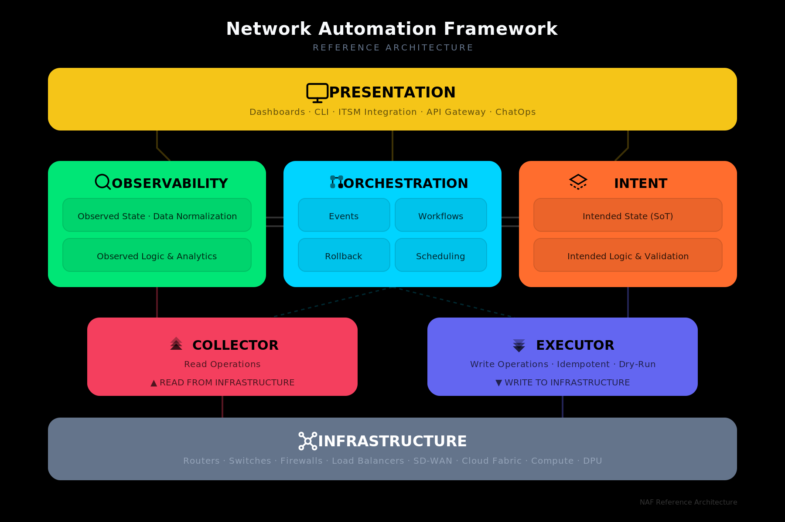
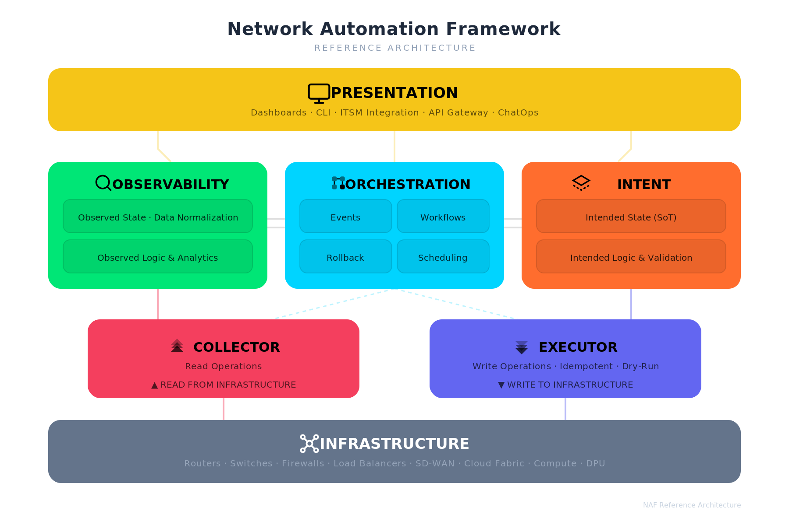
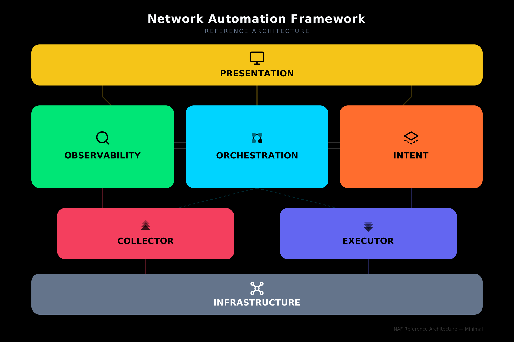
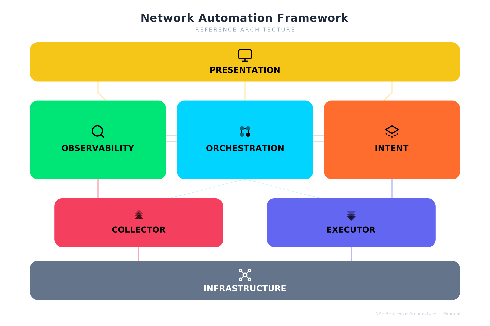
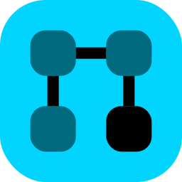

NAF — Network Automation Framework Brand Guidelines
1. Overview
This document defines the visual identity for the Network Automation Framework (NAF). It covers the official color palette, iconography, layout structure, and usage rules for the seven building blocks. A ready-to-use prompt for regenerating the full architecture diagram in SVG is included at the end.
2. Reference Diagrams
Two diagram styles are available: the full variant with detailed sub-labels for each block, and the minimal variant that shows only the block titles and icons for use at smaller sizes or in dense layouts. Each style is provided on both dark and light backgrounds.
Full — Dark Variant

Full — Light Variant

Minimal — Dark Variant

Minimal — Light Variant

3. Color Palette
Each building block has a dedicated color. All seven blocks use distinct hues for maximum differentiation across contexts.
| Building Block | Color Name | Hex | RGB | Usage Notes |
|---|---|---|---|---|
| Presentation | NAF Yellow | #f5c518 |
245, 197, 24 | Top-level layer. |
| Observability | Vivid Green | #00e676 |
0, 230, 118 | Read-side logic. |
| Orchestration | Electric Cyan | #00d4ff |
0, 212, 255 | Central coordination. |
| Intent | Hot Orange | #ff6d2e |
255, 109, 46 | Write-side logic. |
| Collector | Rose Red | #F43F5E |
244, 63, 94 | Transport layer — read side. |
| Executor | Indigo | #6366F1 |
99, 102, 241 | Transport layer — write side. |
| Infrastructure | Slate Gray | #64748b |
100, 116, 139 | Bottom layer. Neutral anchor. |
Background Colors
| Variant | Hex | When to use |
|---|---|---|
| Dark | #000000 |
Presentations on dark slides, hero images, website dark mode |
| Light | #FFFFFF |
Print, documents, website light mode |
Text Colors on Blocks
All block titles and sub-labels use black (#000000) text at varying opacities, except Infrastructure which uses white (#FFFFFF) text.
| Element | Fill |
|---|---|
| Block title | #000000 at 100 % |
| Sub-label / description | #000000 at 67 % (#000000AA) |
| Infrastructure title | #FFFFFF at 100 % |
| Infrastructure sub-label | #94A3B8 |
4. Iconography
Each building block has a dedicated icon drawn in a consistent geometric style at 24×24 px viewBox. Icons use stroke-based or filled paths in black and should be rendered alongside the block name.
Icon Catalog
Presentation — Monitor
A screen with a stand, representing dashboards and user interfaces. Style: Geometric / Line.
| Transparent | Colored |
|---|---|
Observability — Search / Inspect
A magnifying glass representing monitoring, inspection, and data discovery. Style: Geometric / Line.
| Transparent | Colored |
|---|---|
Orchestration — Grid Flow
A 2×2 grid of rounded squares connected by lines, representing workflow coordination. Style: Filled / Bold.
| Transparent | Colored |
|---|---|
 |
Intent — Diamond / Prism
A layered diamond shape representing structured intent definitions and source of truth. Style: Geometric / Line.
| Transparent | Colored |
|---|---|
Collector — Upward Chevrons
Three stacked upward-pointing chevrons at increasing opacity, representing data being pulled up from infrastructure. Style: Filled.
| Transparent | Colored |
|---|---|
Executor — Downward Chevrons
Three stacked downward-pointing chevrons at increasing opacity, representing configuration being pushed down to infrastructure. Style: Filled.
| Transparent | Colored |
|---|---|
Infrastructure — Network Mesh
A central node connected to four corner nodes, representing the network fabric. Style: Geometric / Line.
| Transparent | Colored |
|---|---|
5. Layout Structure
The diagram follows a layered architecture read top-to-bottom:
┌─────────────────────────────────────────────┐
│ PRESENTATION │ ← Full width
└─────────────────────────────────────────────┘
│ │ │
┌───────────┐ ┌───────────────┐ ┌───────────┐
│OBSERVABILITY│ │ ORCHESTRATION │ │ INTENT │ ← Three equal columns
└───────────┘ └───────────────┘ └───────────┘
│ ╱ ╲ │
┌──────────┐ ┌──────────┐
│ COLLECTOR │ │ EXECUTOR │ ← Narrower, centered
└──────────┘ └──────────┘
│ │
┌─────────────────────────────────────────────┐
│ INFRASTRUCTURE │ ← Full width
└─────────────────────────────────────────────┘
Layer Mapping
| Layer | Blocks | Role |
|---|---|---|
| User Interface | Presentation | How humans and systems interact with the framework |
| Logic | Observability, Orchestration, Intent | Core automation logic — read, coordinate, write |
| Transport | Collector, Executor | Read from and write to infrastructure |
| Resources | Infrastructure | Physical and virtual network/compute resources |
Read / Write Symmetry
The left side of the diagram represents the read path (Observability → Collector → Infrastructure) and the right side represents the write path (Intent → Executor → Infrastructure). Orchestration sits in the center, coordinating both sides.
6. Sub-block Content
Each logic-layer block contains internal sub-labels:
| Block | Sub-blocks |
|---|---|
| Observability | Observed State · Data Normalization / Observed Logic & Analytics |
| Orchestration | Events · Workflows / Rollback · Scheduling |
| Intent | Intended State (SoT) / Intended Logic & Validation |
| Collector | Read Operations / ▲ READ FROM INFRASTRUCTURE |
| Executor | Write Operations · Idempotent · Dry-Run / ▼ WRITE TO INFRASTRUCTURE |
| Presentation | Dashboards · CLI · ITSM Integration · API Gateway · ChatOps |
| Infrastructure | Routers · Switches · Firewalls · Load Balancers · SD-WAN · Cloud Fabric · Compute · DPU |
7. Typography
| Element | Font | Size | Weight |
|---|---|---|---|
| Diagram title | Inter (fallback: Helvetica Neue, Arial) | 20 px | 700 (Bold) |
| Subtitle | Inter | 10 px | 400 |
| Block title | Inter | 15–17 px | 700 (Bold) |
| Sub-label | Inter | 10 px | 500 (Medium) |
8. Prompt — Regenerate Full NAF Architecture Diagram
Copy the prompt below into any LLM that can generate SVG to produce a NAF diagram matching these brand guidelines.
PROMPT START
Generate an SVG diagram (viewBox 0 0 900 600) for the Network Automation Framework (NAF) reference architecture. Use font-family "Inter, Helvetica Neue, Arial, sans-serif" throughout.
BACKGROUND: Use a solid rectangle fill. Use #000000 for dark variant or #FFFFFF for light variant.
TITLE: Centered at top. "Network Automation Framework" in 20px bold. Below it, "REFERENCE ARCHITECTURE" in 10px uppercase with letter-spacing 2. On dark background use white (#F8FAFC) title and gray (#64748B) subtitle. On white background use dark (#1E293B) title and light gray (#94A3B8) subtitle.
LAYOUT — 4 horizontal layers, top to bottom:
LAYER 1 — PRESENTATION (full width, ~790px wide, height 72px, rounded corners rx=14):
- Color: #f5c518 (NAF Yellow)
- Icon: Monitor — a rectangle screen (stroke, no fill) with a stand line below it, placed to the left of the title
- Title: "PRESENTATION" in 17px bold black
- Sub-text: "Dashboards · CLI · ITSM Integration · API Gateway · ChatOps" in 10px, black at 60% opacity
LAYER 2 — Three equal-width blocks side by side (each ~250px wide, height 145px, rx=14), with 20px gaps:
Left block — OBSERVABILITY:
- Color: #00e676 (Vivid Green)
- Icon: Magnifying glass (circle + angled line, stroke only), placed inline left of title
- Title: "OBSERVABILITY" in 15px bold black
- Two sub-boxes (rx=8, fill #00000015, stroke #00000020):
- "Observed State · Data Normalization"
- "Observed Logic & Analytics"
Center block — ORCHESTRATION:
- Color: #00d4ff (Electric Cyan)
- Icon: 2×2 grid of rounded squares connected by lines (filled), placed inline left of title
- Title: "ORCHESTRATION" in 15px bold black
- Four sub-boxes in a 2×2 grid:
- Top row: "Events" | "Workflows"
- Bottom row: "Rollback" | "Scheduling"
Right block — INTENT:
- Color: #ff6d2e (Hot Orange)
- Icon: Layered diamond/prism shape (stroke, dashed lower layer), placed inline left of title
- Title: "INTENT" in 15px bold black
- Two sub-boxes:
- "Intended State (SoT)"
- "Intended Logic & Validation"
Add subtle horizontal connector lines between adjacent middle blocks (double lines, semi-transparent).
LAYER 3 — Two narrower blocks (~310px each, height 90px, rx=14), centered under their parent:
Left — COLLECTOR:
- Color: #F43F5E (Rose Red)
- Icon: Three stacked upward chevrons at increasing opacity (0.4, 0.7, 1.0), filled black
- Title: "COLLECTOR" in 15px bold black
- Sub-text: "Read Operations" and "▲ READ FROM INFRASTRUCTURE" in 10px
Right — EXECUTOR:
- Color: #6366F1 (Indigo)
- Icon: Three stacked downward chevrons at increasing opacity (0.4, 0.7, 1.0), filled black
- Title: "EXECUTOR" in 15px bold black
- Sub-text: "Write Operations · Idempotent · Dry-Run" and "▼ WRITE TO INFRASTRUCTURE" in 10px
LAYER 4 — INFRASTRUCTURE (full width, ~790px, height 72px, rx=14):
- Color: #64748b (Slate Gray)
- Icon: Network mesh — central circle connected to 4 corner circles by lines (stroke white), placed to the left of the title
- Title: "INFRASTRUCTURE" in 17px bold white
- Sub-text: "Routers · Switches · Firewalls · Load Balancers · SD-WAN · Cloud Fabric · Compute · DPU" in 10px, #94A3B8
CONNECTORS: Add subtle flow lines between layers using each block's color at 40% opacity. Dashed lines from Orchestration to Collector and Executor. Solid lines from Observability down to Collector and Intent down to Executor.
SHADOW: Apply a subtle drop shadow (dy=4, stdDeviation=6, flood-color #00000018) to all blocks.
Ensure all icons sit inline to the LEFT of their block title text, both vertically centered within the title area. Icons should not overlap with text.
PROMPT END
9. Prompt — Generate Individual Icon SVGs
Use this prompt to generate standalone icon files for each building block.
PROMPT START
Generate 14 individual SVG icon files for the NAF (Network Automation Framework) building blocks. Each icon should use a 24×24 viewBox. Create two versions of each icon:
TRANSPARENT BACKGROUND VERSION:
- No background rectangle
- Icon strokes/fills in black (#000000)
- Suitable for use on any background
COLORED BACKGROUND VERSION:
- Rounded rectangle background (rx=6) filling the full viewBox, using the block's brand color
- Icon strokes/fills in black (#000000)
- Suitable for standalone use as app icons or badges
Here are the 7 icons and their colors:
1. PRESENTATION (color: #f5c518)
Monitor icon: <rect x="2" y="3" width="20" height="14" rx="2"/> with stand lines from center bottom to a horizontal base line. Stroke-based, no fill.
2. OBSERVABILITY (color: #00e676)
Search icon: <circle cx="11" cy="11" r="8"/> with a diagonal line from (16.65,16.65) to (21,21). Stroke-based, no fill.
3. ORCHESTRATION (color: #00d4ff)
Grid flow icon: Four 6×6 rounded squares at positions (4,4), (14,4), (4,14), (14,14) with rx=2. The bottom-right square is fully opaque, others at 0.5. Connecting lines between them. Filled style.
4. INTENT (color: #ff6d2e)
Diamond/prism icon: A closed diamond path "M12 3L2 9l10 6 10-6-10-6z" with a dashed lower layer "M2 15l10 6 10-6". Stroke-based, no fill.
5. COLLECTOR (color: #F43F5E)
Upward chevrons: Three "V" shapes pointing up — "M5 10l7-7 7 7" at opacity 0.4, "M5 14l7-7 7 7" at 0.7, "M5 18l7-7 7 7" at 1.0. Filled black.
6. EXECUTOR (color: #6366F1)
Downward chevrons: Three inverted "V" shapes pointing down — "M5 6l7 7 7-7" at opacity 0.4, "M5 10l7 7 7-7" at 0.7, "M5 14l7 7 7-7" at 1.0. Filled black.
7. INFRASTRUCTURE (color: #64748b)
Network mesh: Central circle (cx=12, cy=12, r=3), four corner circles at (5,5), (19,5), (5,19), (19,19) each r=2, connected to center by lines. Stroke-based white (#FFFFFF) for colored version, black for transparent version.
PROMPT END
10. File Inventory
| File | Description |
|---|---|
naf-automation-framework-v1-dark.svg / .png |
Full architecture diagram — dark background |
naf-automation-framework-v1-white.svg / .png |
Full architecture diagram — white background |
naf-automation-framework-v1-minimal-dark.svg / .png |
Minimal architecture diagram — dark background |
naf-automation-framework-v1-minimal-white.svg / .png |
Minimal architecture diagram — white background |
naf-icon-{block}-transparent.svg / .png |
Individual icon, transparent background (×7) |
naf-icon-{block}-colored.svg / .png |
Individual icon, colored background (×7) |
naf-project-icon.svg / .png (64–1024) |
Project icon in multiple sizes |
naf-sticker.svg / .png (512, 1024) |
NAF sticker artwork |
naf-brand-guidelines.md |
This document |
naf-brand-guidelines.pdf |
PDF version of this document |